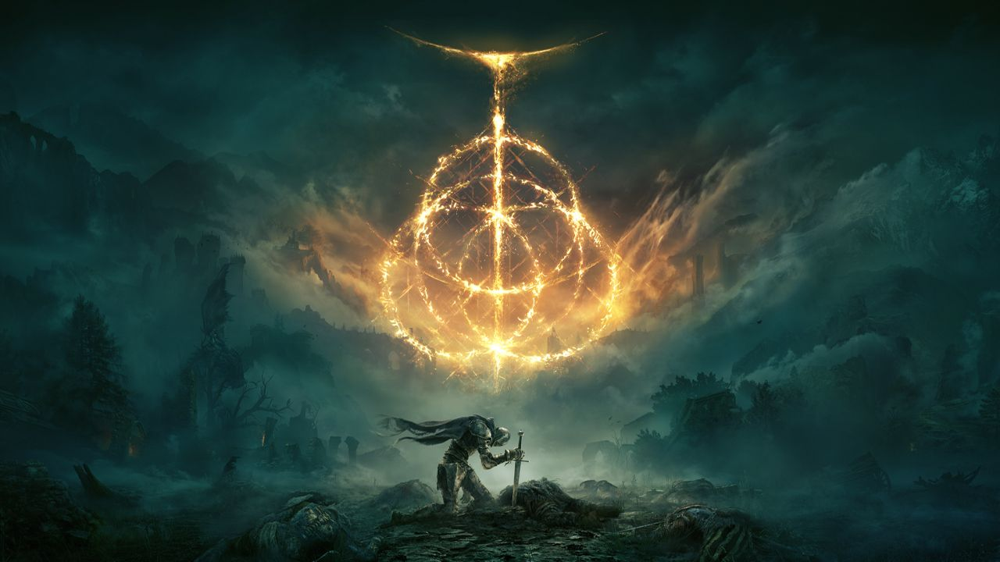
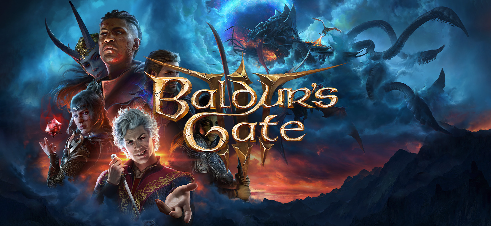
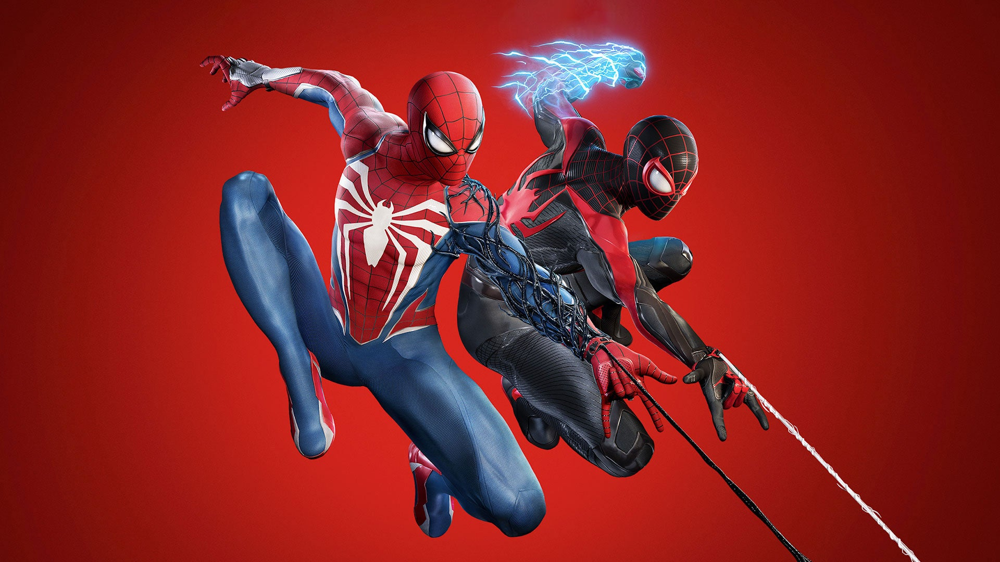
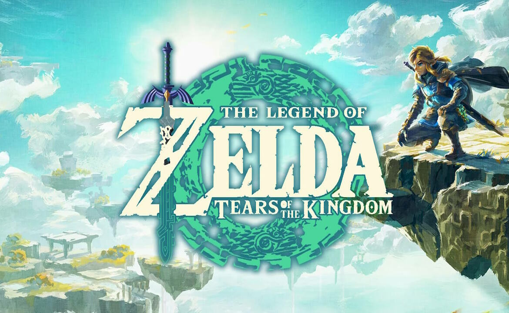

My Favorite Recent Games
- Elden Ring - 10/10
- Baldur's Gate 3 - 9.8/10
- Marvel's Spider-Man 2 - 9/10
- The Legend of Zelda: Tears of the Kingdom - 9.7/10
Elden Ring

A massive open-world RPG with incredible combat, lore, and challenge.
My Rating: 10/10
Baldur's Gate 3

An immersive RPG with unmatched player freedom and storytelling.
My Rating: 9.8/10
Spider-Man 2

Fast-paced action with great visuals and emotional storytelling.
My Rating: 9/10
Tears of the Kingdom

Creative gameplay and exploration that expands on Breath of the Wild.
My Rating: 9.7/10
Submit Your Favorite Game
Learn More
Visit The Game Awards for major gaming awards and releases.